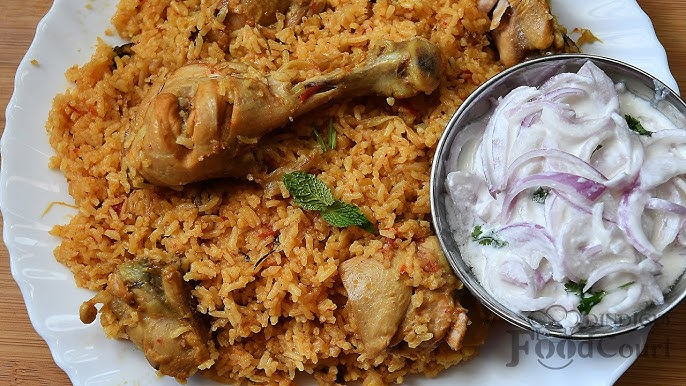

Special Ambur Biriyani With Raitha Recipe
Here's a complete recipe for Ambur Biryani with Raita, combining both dishes for a perfect meal:
Ingredients:
For the Rice:
- 2 cups Basmati rice (or any long-grain rice)
- 4 cups water
- 1 bay leaf
- 2-3 cloves
- 1 cinnamon stick
- 2-3 cardamom pods
- Salt to taste
For the Marinade:
- 500 grams chicken (cut into pieces) or mutton
- 1 cup yogurt
- 2 tablespoons ginger-garlic paste
- 1 tablespoon red chili powder
- 1 tablespoon turmeric powder
- Salt to taste
- Juice of 1 lemon
- Fresh coriander and mint leaves (finely chopped)
- 2-3 tablespoons biryani masala or garam masala
For the Biryani:
- 3 tablespoons ghee (clarified butter)
- 2 medium-sized onions (thinly sliced)
- 2 tomatoes (chopped)
- 1 tablespoon ginger-garlic paste
- 2-3 green chilies (slit)
- 1/2 teaspoon cumin seeds
- 1 teaspoon fennel seeds (optional)
- 1/4 teaspoon saffron strands (optional)
- 1/4 cup warm milk (for saffron)
- Salt to taste
Instructions:
- Marinate the Chicken/Mutton:
- In a large bowl, mix the chicken or mutton pieces with yogurt, ginger-garlic paste, red chili powder,
turmeric powder, salt, lemon juice, chopped mint, and coriander leaves. Let it marinate for at least
30 minutes to 1 hour.
- Prepare the Rice:
- Wash the rice thoroughly and soak it for about 30 minutes.
- In a large pot, bring water to a boil. Add bay leaf, cloves, cinnamon, cardamom, and salt.
- Add the soaked rice to the boiling water and cook it until 70-80% cooked (the rice should still be firm).
Drain the water and set the rice aside.
- Cook the Biryani:
- In a large pan or pressure cooker, heat ghee over medium heat. Add cumin seeds and fennel seeds (if using).
- Add sliced onions and sauté until they turn golden brown.
- Add ginger-garlic paste and sauté for another 1-2 minutes.
- Add chopped tomatoes and cook until they soften.
- Add the marinated chicken or mutton, and cook for 5-7 minutes, allowing the meat to cook slightly.
- If using saffron, soak the saffron strands in warm milk and set it aside.
- Layering:
- Once the meat is partially cooked, layer the partially cooked rice over the meat mixture in the pan.
- Drizzle the saffron milk over the rice for color and aroma.
- Add fresh coriander and mint leaves on t
- Cover the pan with a tight-fitting lid and cook on low heat for about 20-25 minutes (or use the "dum" method in
a pressure cooker by placing a heavy pan on top of the lid to seal the steam).
- Serving:
- After the biryani is cooked, allow it to rest for 5-10 minutes before opening the lid./li>
- Gently fluff the rice and serve hot with raita or salad.
Enjoy your delicious and aromatic Ambur Biryani!
Nutrition Table For Biriyani
| Nutrient |
Amount per Serving (200g) |
| Calories |
250-350 kcal |
| Protein |
7-12 g |
| Fat |
10-15 g |
| Carbohydrates |
35-45 g |
| Fiber |
2-3 g |
| Sugar |
2-4 g |
| Sodium |
400-600 mg |
| Cholesterol |
20-30 mg |
| Vitamin A |
2-5% of daily value |
| Vitamin C |
2-4% of daily value |
| Calcium |
2-5% of daily value |
| Iron |
5-10% of daily value |